Dwight lise boyunca geeky ve cılızdı. Her zaman havalı çocuklardan biri olmak istiyordu, ama bir şekilde karizması olmadı. Bir hafta sonu, çıkmaz işinden bir ekip oluşturma tatbikatında Dwight'ın patronu, aile tarifi moonshine'yi kırmadan önce onları ormanların derinliklerine götürdü.Dwight, birisi 'Survivor' derken düşündüğünüz tipik bir adam değil. Bazı pizzazlardan yoksundur ve gözlükleri olmadan az çok kördür. Fakat güneş batarken ve ormanlar canlanırken, Dwight sıçan yarış hayatına bağlanır ve düşünülemez bir şey peşinde olsa bile başka bir günü görmek için yaşayacağından emin olur. Dwight durmayacak. Ne olursa olsun hayatta kalacak. Tablolar şimdi döndü ve şimdi hayatta kalacaklarsa diğerlerinin Dwight'ın sağlam yönergelerini takip etmeleri gerekiyor.
| 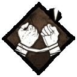 | Bond | Özelliğin seviyesine göre 20/28/36 metre arasındaki dostlarınızın yaralı olup olmadığını aura okuyarak görebilirsiniz. "Takım olarak çalışmalıyız, hayatta kalabilmem için hayatta kalmana ihtiyacım var!" - Dwight Fairfield |
| 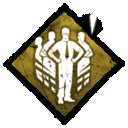 | Prove Thyself | Tamir etme, iyileştirme ve sabotaj yaparken takım arkadaşlarınız 8 metreden az bir mesafe yakınınızdaysa bu işleri yapma hızınız artar. "Bana ne yapabildiğini göster!" — Dwight Fairfield |
| 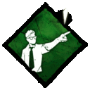 | Leader | Takımı daha iyi hale getirebilmek için herkesi organize edersiniz. Diğer survivorların tamir etme, sabotaj ve iyileştirme hızları siz 8 metre içindeyken artar. |
Ebeveynlerinin Claudette'e ilk bilim setini verdiği günden beri deneyleri severdi. Montreal'den ayrılmak büyük bir karardı, ama şansı kaçırmak için çok iyiydi. İç içe geçmiş doğası, sohbet odalarının ve forumların artık onun en iyi sosyal etkileşim kaynağı olduğu anlamına geliyor. En sevdiği yeni etkinlik, yeni Bilim Kızı adıyla başkaları için botanik sorularına cevap vermektir. Bir akşam, şehirden uzun bir otobüs yolculuğu sırasında, Claudette hayatını değiştirecek bir yürüyüşe çıktı. Kalın ormanda tamamen yönünü kaybetmesi sadece bir dakika sürdü. Asla geri dönüş yolunu bulamadı. Forumu, yayınlamayı bıraktıktan sadece bir hafta sonra nerede olduğunu merak etmeye başladı.
| 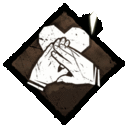 | Empathy | Yaralı ya da ölmek üzere olan bir arkadaşınız belirli bir yakında ise onu görebilrisiniz. |
| 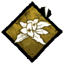 | Botany Knowledge | Kamp ateşinin etrafında bulunan bitkileri kanamayı yavaşlatan tentürlere dönüştürüyorsunuz.
İyileşme Hızı ve İyileştirme Maddesi Verimliliği% 11/22/33oranında artırıldı. "Temel botanik bilgisi bir gün hayatınızı kurtarabilir." - Claudette Morel |
| 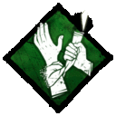 | Self Care | Elinizde ilk yardım kutusu olmadan kendinizi iyileştirebilirsiniz. |
Belki de ona şiddetli çizgi aşılayan annesi ya da bebekken onları terk eden babasıydı. Meg okulda mükemmeldi ama raydan çıktı. Neyse ki, bir atletizm antrenörü onu yanlış enerjisini pistte yönlendirmesi için cesaretlendirdi. Kendisini bir lise yıldızı olmaya motive etti ve üniversiteye burs kazandı. Annesi hastalandığında Meg, onu büyüten kadına bakmak için üniversitedeki şansını bırakmaya karar verdi. Bir yaz günü, ormanın derinliklerinde uzun vadede Meg kayboldu.Meg, sadece enerji ile dolu olanlardan biridir. Birisi bir şey çok yanlış gitmeden önce Meg'e odaklanmak zorunda kaldı. Neyse ki, birisi yaptı. Koşmaya başladı. Belki de enerjisini körükleyen tanımsız bir şeyden. Yani eşit yaşam koşmak. Ama şimdi koşmak, başkalarının acısını çeken varlıkları çekebilir. Ama bir şeyden kaçmak yerine ona doğru bir şey anlıyor. Hızın özü olmadığını anlıyor. O bitiş çizgisine ulaşıyor. Oldukça son ama yine de nefes alıyor. Engeller ve korkulardan kaçarken orada olan her şeyi deliler, böylece hayatta kalmayı başarır.
| 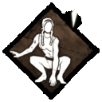 | Quick & Quiet | Engellerin üzerinden atlama, dolaplara saklanma gibi bir eylemde bulunduğunuzda 1 defaya mahsus ses çıkarmanızı engeller. Uygulamış olduğunuz bu eylemler katilin duyması güçleştirir. Perk kullanıldığında bekleme süresi etkinleşir bu süre bittikten sonra tekrar kullanılabilir. |
| 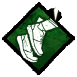 | Sprint Burst | Koşmanız halinde 3 saniyeliğine %150 haraket hızı kazanırsınız. Perk kullanıldığında bekleme süresi etkinleşir bu süre bittikten sonra tekrar kullanılabilir. |
| 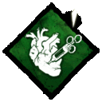 | Adrenaline | Yaralandığınızda ya da yere düştüğünüzde takım arkadaşlarınızdan herhangi biri çıkış kapısına dokunduğunda 5 saniyeliğine %150 hareket hızı kazanırsınız ve iyileşirsiniz. Perk'in 60/50/40 saniye bekleme süresi vardır. |
Jake'in kaderi, annesinin rahminde bile belirlendi. Servet, soylu davranışlar ve aile itibarının ve mirasının bekçisinin varisi. İşkence sırasında bir erkeği kıran acı değil, büyük bir baskıdır. Jake daha fazla baskı yapamadı. Bunun yerine kaliteli yemek ve hizmetçilerin tam tersini aradı. Izgaradan ayrıldı ve en yakın komşu olarak bir ormanla sonuçlandı. Kendini yabancı yapan Jake, doğayı anlar. Bir şeyleri evcilleştirmek için orada değil, daha çok vahşi oluyor. Boşaltmak için kan arayan acımasız Katilleri kaldırın ve Jake sadece evinde hissedecekti. Wifi yok. Fortune-500 şirketi yok. Baba ya da anne yok. Modern yaşamdan yıllar sonra Jake'e sorunlar için yeni bir his verdi. Acı, beslenmenizi engelleyen bir engeldir. Sizi avlayan ne olursa olsun, bir adım önde olmanız gerekir. Mücadele edin, uyum sağlayın, uyum sağlayın. Başkalarının sizi Dünya yüzeyinden silmesini kolaylaştırma.
| 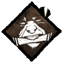 | Iron Will | Yaralandığınız zaman karakterin çıkardığı hormutuların/çığlıkların ses seviyesini aşağıya çeker. Böylece yaralıyken daha az ses çıkartırsınız. Bu etki %50/%75/%100 şeklinde etki gösterir. |
| 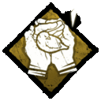 | Calm Spirit | Karagalara yaklaştığınız zaman %80/%90/%100 ses çıkartıp karganın uçma olasılığı azalır. Bu sayede katil yerini öğrenmen için etraftaki kargalardan yardım alamaz. |
| 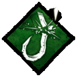 | Saboteur | Toolbox(alet çantası) yardımı olmadan oyun içinde bulunan kancaları sabote edebilirsiniz. Bu perk ile kacalar %50 daha hızlı sabote olur. Basement(bodrum katında) bulunan kancalar hariç. Kancaları ve Trapper katilinin kullandığı ayı tuzaklarını 10/20/30 saniye daha uzun süre sabote olur. |
Nea İsveç kökenli, etiketçi ve biraz baş belasıdır. 16 yaşında isyan etmeye başladı, saçlarını siyaha boyadı ve sevdiği şekilde kesti. Genç yaşlarında, ebeveynleri, herkesi 'normal' yapan şeyden yoksun olduğunu düşündü.Bir daha asla görülmedi ve şimdi Varlığın tehlikelerinden kurtulmak için elinden geleni yapıyor. Nea İsveç'in küçük Hjo kasabasında büyüdü. Annesi ve babası çok çalışsa da mutlu bir çocukluğu vardı. ABD'ye taşınma fırsatı bir gerçeklik haline geldiği için oyunculuk yapmaya başladı. Ebeveynleri bunu hareketlerine bir tepki olarak görmedi. Nea arkadaşlarını ve hayatını geride bırakmak zorunda kaldı. Nea, ailesinin “normal” kabul ettiği şeyden uzaklaştı. Bunun yerine paten parklarına sığındı ve “Mashtyx” etiketi yeni memleketinde aşağı yukarı görüldü ve Nea hükümet binalarını etiketlemek dışında bir spor yaptı. Sonunda Nea’nin ebeveynleri, Nea'nin birkaç günlüğüne ortadan kaybolmasına alıştı. Çevik ve neredeyse kedi gibi, ölümcül tehlikelerden kaçabiliyor. Kaykaylardaki yıllar, layık bir eğitim olduğunu kanıtlamıştır. Ve başını aşağıda tutarak tüylerden kaçınmak tüm tehlikelere uygulanabilir. Tek soru, vazgeçmemekle ilgilenip ilgilenmediğidir.
| 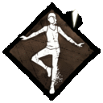 | Balanced Landing | Yüksek yerlerden atladığınız zaman yere düştükten sonra etki eden sarsılma ve karakter kontrolünü kazanma hızınızı arttırır bir nevi sendelemeyi azaltır. |
| 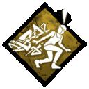 | Urban Evasion | Çömelerek hareket etme hızınızı arttırır.
1 Level iken %90, 2 Level iken %95, 3 Level iken %100, |
| Streetwise | 8 metre içindeki herkes için item(eşya) dayanıklılığını arttırır. Bu sayede daha eşyalarınız daha uzun süre kullanılır hale gelir.
1 Level iken %10, 2 Level iken %12, 3 Level iken %15, Takım arakdaşlarınızın yanından ayrıldığınız zaman bu etki 15 saniye kadar devam eder. |
Vietnam'da iki tur, bir avuç madalya, şarapnel dolu bir diz ve William 'Bill' Overbeck'in dövüşü durdurup huzurlu bir hayat yaşamaya çalışması için onurlu bir deşarj oldu. Bundan nefret ediyordu. On yıllar boyunca çıkmaz işlerle amaçsızca sürüklenerek harcadıktan sonra, Bill rutin bir ameliyat için gitti ve gittiğini bildiği dünyayı bulmak için uyandı. Bir veba normal insanları akılsız öldürme makinelerine dönüştürüyordu. Doğal olarak, yaptığı ilk şey evine kavga etmek ve üniformasını giymekti. Kırsal hayalet kasabalardan ve zifiri kara ormanlardan geçerken, diğer Survivor'ları buldu ve birlikte enfekte olmuş ordulardan kaçtılar. Sonunda, Bill onların güvenliğini sağlamak için kendini feda etti. Cesedi asla bulunamadı. Bill ölüme terk edildi. Kimse hala istediği tek şeye sahip olduğunu bilmiyor: savaşmak için bir düşman.
| 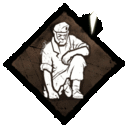 | Left Behind | Hayatta kalan tek survivor Bill ise jeneratör tamir etme hızınız artar.
1 Level iken %19 2 Level iken %22 3 Level iken %25 |
| 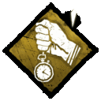 | Barrowed Time | Kancaya takılı arkadaşınızı kurtardığınız sırada katil tarafından kovalanıyorsanız ya da şiddetli bir şekilde kalp sesi duyuyorsanız arkadaşınızı kurtardığınızda kancadan kurtulan kişi bir süre ''hasar almaz'' duruma geçer. Bu süre bittiği taktirde yaralı ise yere düşer. Maç içinde birden fazla kullanılabilir.
1 Level iken 15 saniye hasar almaz, 2 Level iken 20 saniye hasar almaz, 3 Level iken 25 saniye hasar almaz. |
| 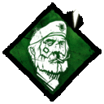 | Unbreakable | Yere düştüğünüz sırada recover(iyileşme barı) doldurursunuz ve bir süre sonra o bar dolmaz sınıra ulaşmıtır. Bu perk ile tek başınıza recover'ı sonuna kadar doldurup ayağa kalkabilirsiniz.
Maç içerisinde sadece 1 kere kullanılabilir.
1 Level iken 0.46 hız ile 26 saniye, 2 Level iken 0.48 hız ile 25 saniye, 3 Level iken 0.50 hız ile 24 saniye recoverlarsınız. |
Zengin bir ailenin tek çocuğu olan David King, büyüklüğe mahkum görünüyordu. Manchester'da büyürken, hem spor hem de akademisyenlerde ciddi bir potansiyel gösterdi ve aile bağlantıları ile tüm kapılar ona açıktı. Savaşçı doğası olmasaydı, her şeyi başarabilirdi.Sağlamlığı ve atletik yetenekleri onu gevşeyebileceği ve gerçekten bir gerginliğe neden olabileceği rugby'ye götürdü. King mükemmeldi ve biraz umursamazsa umut verici bir çaylak olarak ün kazandı. Öfkesini kaybetmesi ve hakeme saldırması, ligden ömür boyu yasak kazanması ve çoğu insanın uzun ve başarılı bir kariyer olacağını düşündüğü şeyleri kısaltmasıyla meteorik yükselişi aniden sona erdi. King kaygısızdı; Para sorun değildi, bu yüzden onu erken emeklilik olarak aldı ve yapılacak eğlenceli şeylere odaklandı.David King, zamanının çoğunu pub'da, içki, oyun izlerken ve kavgalara girerek geçirdi.Birçok kişi onun ara sıra bir 'borç tahsildarı' olduğunu ya da gizli çıplak boğum dövüş kulüplerinde savaştığını bilmiyordu. David King barda görünmeyi bıraktığında, hâlâ sahip olduğu birkaç arkadaş şaşırmadı. Sonunda ondan daha güçlü biriyle kavga ettiğini anladılar. Bir bakıma haklıydılar.
| 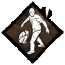 | We're Gonna Live Forever | Takım arkadaşının kaçmasında yardım ettiğinde/takım arkadaşırınla beraber kaçtığında kazandığı bloodpoints miktarını arttırır. 'Hadi o zaman, haydi haydi! Boktan dostum yok.' - David King |
| 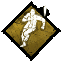 | Dead Hard | Yaralı durumda iken katil tarafından size tam vurulmak üzere iken bu perki aktifleştirdiğinizde katilin içinden geçer ve 1 kereliğine ''hasar almaz'' durumuna geçersiniz. 'Bir gece bir bira şişesi yanımdan, sonra diğeri ve diğeri uçup gittiğinde t'ginnel boyunca yürüyorduk. Kendi kendime' Biraz eğleneceğim 'diye düşündüm, sıkışıp kalalım!' tozum, yemin ederim! ' - David King |
| 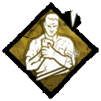 | No Mither | Oyuna yaralı olarak başlarsınız ve böylece ölümden kurtulma hakkı kazanırsınız. Kendinize can basamazsınız. 'Onu kaybettim. Sadece bir tanesini yaktım. Gittiler ve beni yasakladılar. Onlar daha sonra gitmedim, birkaç pint aldım ve bir sonraki bölüme geçtim. Yine de onunla karışamadım, sen Ne demek istediğimi biliyor musun? - David King |